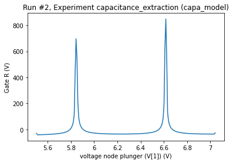

[1]:
%matplotlib inline
from qcodes.dataset.experiment_container import new_experiment
from qcodes.dataset.experiment_container import load_by_id
from qcodes.dataset.plotting import plot_by_id
import nanotune as nt
from nanotune.model.capacitancemodel import CapacitanceModel
Capacitance model for a single dot
Initiate or set database where data should be saved. When initializing a database a new qcodes experiment needs to be created as well.
[2]:
exp_name = 'capacitance_extraction'
sample_name = 'capa_model'
db_name = 'capa_model_test.db'
nt.new_database(db_name, '.')
new_experiment(exp_name, sample_name)
Upgrading database; v0 -> v1: : 0it [00:00, ?it/s]
Upgrading database; v1 -> v2: 100%|█████████████████████████████████████████████████████| 1/1 [00:00<00:00, 498.49it/s]
Upgrading database; v2 -> v3: : 0it [00:00, ?it/s]
Upgrading database; v3 -> v4: : 0it [00:00, ?it/s]
Upgrading database; v4 -> v5: 100%|█████████████████████████████████████████████████████| 1/1 [00:00<00:00, 332.35it/s]
Upgrading database; v5 -> v6: : 0it [00:00, ?it/s]
Upgrading database; v6 -> v7: 100%|█████████████████████████████████████████████████████| 1/1 [00:00<00:00, 166.01it/s]
Upgrading database; v7 -> v8: 100%|█████████████████████████████████████████████████████| 1/1 [00:00<00:00, 499.56it/s]
Upgrading database; v8 -> v9: 100%|█████████████████████████████████████████████████████| 1/1 [00:00<00:00, 500.27it/s]
[2]:
capacitance_extraction#capa_model#1@C:\Workshop\nanotune\docs\examples\capa_model_test.db
-----------------------------------------------------------------------------------------
Initialize an instance of CapacitanceModel with three gates and one dot
[3]:
voltage_nodes = {
0: 'left_barrier',
1: 'plunger',
2: 'right_barrier',
}
charge_nodes = {
0: 'A',
}
qdot = CapacitanceModel(
'qdot',
charge_nodes=charge_nodes,
voltage_nodes=voltage_nodes,
db_name=db_name,
db_folder='.'
)
Set voltages, define capacitance matrix and calculate the corresponding ground state dot occupation. Negative electron occupations are not allowed, they are replaces with zero.
[4]:
qdot.V_v([
-1.55, # left_barrier
1, # plunger
-3.5, # right_barrier
])
# capacitances between gates and dots
qdot.C_cv(
# left_b plunger right_b
[[-0.1, -1.3, -2]],
)
print(qdot.determine_N())
[0.0]
Determine the voltage range required to sweep in order to measure specific charge states (dot occupancies)
[5]:
N_limits = [(0, 2)]
sweep_ranges = qdot.determine_sweep_voltages([1], N_limits=N_limits)
print(sweep_ranges)
[(5.5038085937500085, 7.042281652688992)]
[6]:
dataid = qdot.sweep_voltage(
1,
sweep_ranges,
n_steps=200,
normalize=False,
)
plot_by_id(dataid)
Starting experimental run with id: 1.
[6]:
([<AxesSubplot:title={'center':'Run #1, Experiment capacitance_extraction (capa_model)'}, xlabel='voltage node plunger (V[1]) (V)', ylabel='Gate R (V)'>],
[None])

Let’s change the voltage configuration to see what happens to the Coulomb peaks
[7]:
qdot.V_v([
-3, # left_barrier
1, # plunger
-3.5, # right_barrier
])
dataid = qdot.sweep_voltage(
1,
sweep_ranges,
n_steps=200,
normalize=False,
)
plot_by_id(dataid)
Starting experimental run with id: 2.
[7]:
([<AxesSubplot:title={'center':'Run #2, Experiment capacitance_extraction (capa_model)'}, xlabel='voltage node plunger (V[1]) (V)', ylabel='Gate R (V)'>],
[None])
